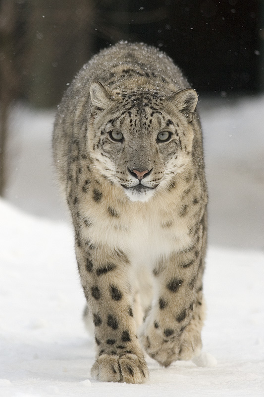

About leopard
Snow Leopard (Panthera uncia): Snow leopards are carnivorous big cats found in the mountainous regions of Central and South Asia. They primarily prey on mountain goats and other ungulates. Snow leopards are known for their elusive nature and strikingly beautiful fur, adapted for their cold, high-altitude habitats
